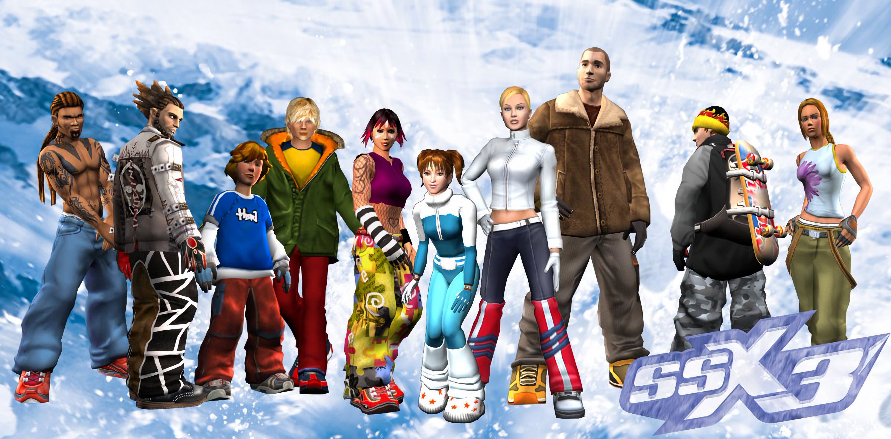

SSX 3 (Snowboard Supercross 3) is a snowboarding game released in 2003 and developed by EA Canada in Vancouver, British Columbia. It is set on a fictional mountain, where the player is tasked with navigating down both as fast and stylishly as possible in a series of races and freestyle events. SSX 3 was a pioneer of modern game design that built even more upon the two games before it, and it's abundance of highly rated reviews and remaining die hard player community show this clearly. The game was far ahead of its time and still holds up remarkably well even today!
Open world – For the first time in the series, players could now start at the top of the mountain and traverse all the way down in one run, with no loading screens breaking up gameplay. Every course is connected and you can choose which courses you want to shred without needing to select it from the menu beforehand.
Intricate course design – Much like the two games prior, the course designs are exaggerated, extreme, and thoroughly intricate. There are multiple ways to traverse down the track meaning that playing the same course over and over never seems to get old. Tracks like these would kill you if they were attempted in real life, which adds to the excitement and surrealism. From the beginning, they were designed to be larger than life.
Dynamic soundtrack– The soundtrack was a mix of different genres including house, trance, electronic, drum and bass, punk, modern rock and hip-hop. As opposed to a regular soundtrack where songs would play in the background, the game used a system where the song would dynamically change based on your performance, where you were positioned in the track, at the beginning and end of the race and so on. Every song in the game was heavily remixed to give a different vibe depending on the segment of the song that was playing. These segments were then phased in and out depending on the parameters set for each segment. The sound designers put an incredible amount of attention into the game and it shows.
Lore & Customisation – The game characters all have distinctive and diverse personalities, each with much more voice work than you would expect from this genre. The characters interact with each other throughout the race and all have their own biographies that you can discover within the menus. You can customise the characters clothing as well as the tricks they perform. You can even change the HUD & sound settings to make the game less arcade like and into more of an immersive experience. For a sports game, this level of detail and creativity was unheard of at the time.
SSX 3 was re-released as a backwards compatible title on the Xbox One in 2018, receiving a huge performance gain and more excellent feedback from the community. Other than that, your options are to pick up a copy and a retro console or to emulate the game on your PC. More information can be found about the game here.